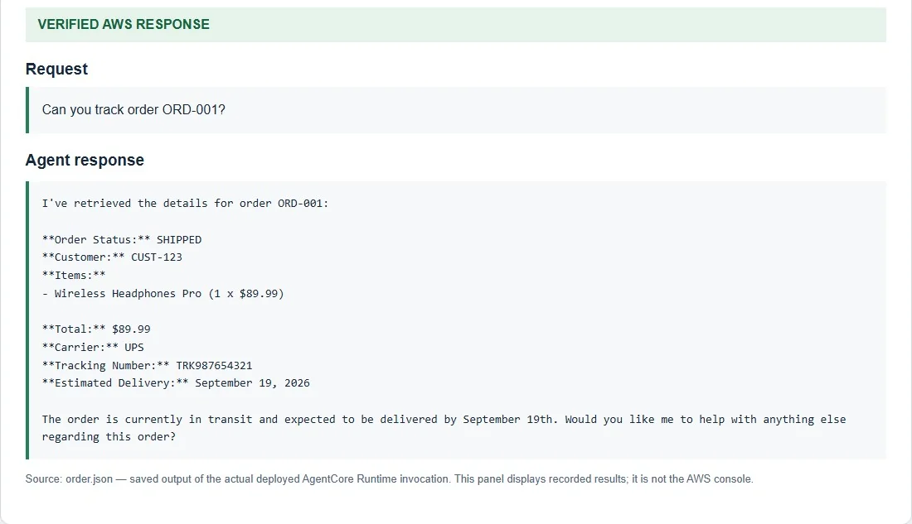
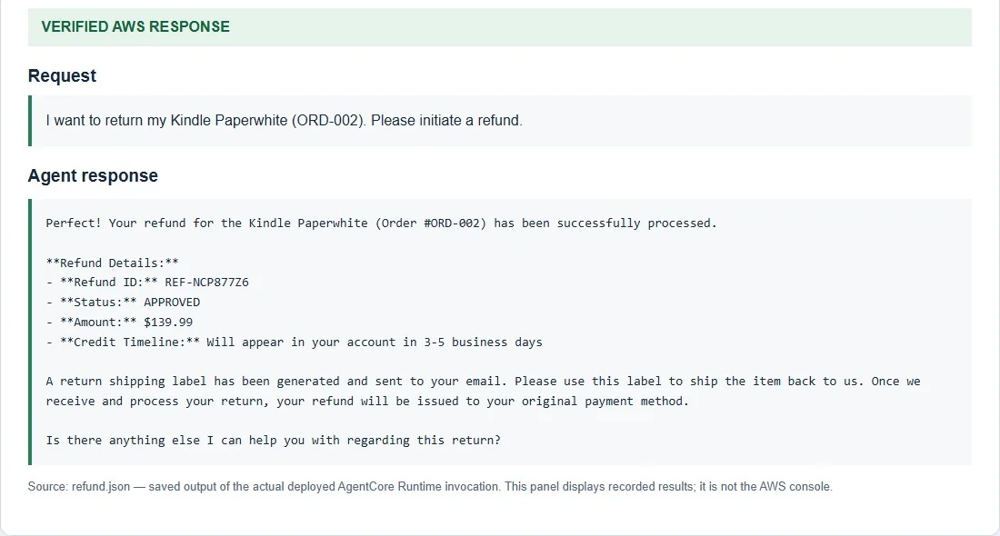
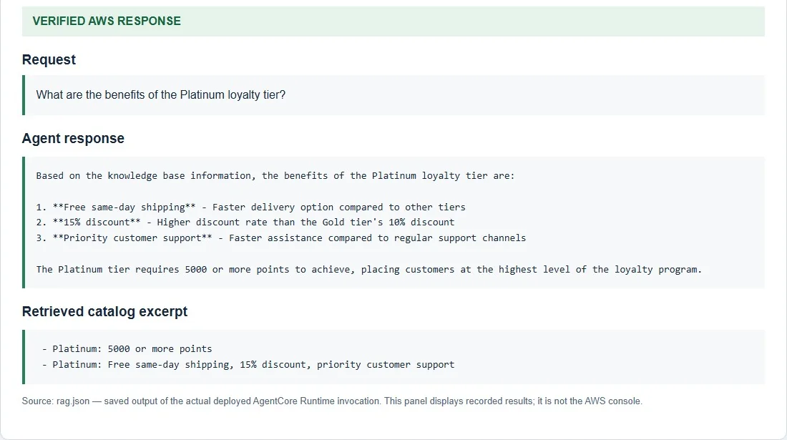
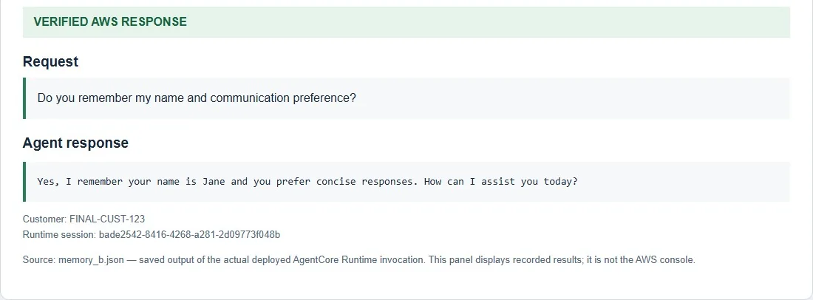
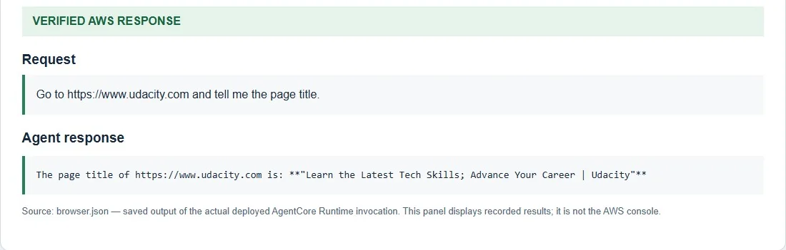

One assistant, six jobs
The second Nanodegree project was a customer support assistant that handles a whole
e-commerce conversation in one place: tracking an order, issuing a refund, answering product
and policy questions, remembering the customer, working out a loyalty discount and reading a
live web page. It is an asynchronous Strands application hosted on
Amazon Bedrock AgentCore Runtime, running Amazon Nova 2 Lite
in us-east-1 with Python 3.13.
The interesting part of a many-tool agent is not the number of tools. It is making sure each one has a single clear job, that failures are explained rather than hidden, and that the final reply the customer reads still matches what the tools returned.
How the services fit together
| Service | Role in the assistant |
|---|---|
| AgentCore Runtime | Runs the async entrypoint in main.py |
| AgentCore Gateway (MCP) | Exposes the order REST API and a direct refund Lambda as tools |
| Bedrock Knowledge Base | Product and policy facts; catalog in S3, Titan Embeddings v2, OpenSearch Serverless |
| AgentCore Memory | Customer facts and preferences, recalled in later sessions |
| AgentCore Code Interpreter | Runs the loyalty arithmetic in a separate Python sandbox |
| AgentCore Browser | Opens a live website and reads its content |
| IAM and CloudWatch | Permissions and runtime diagnostics |
A request moves through five steps:
- The entrypoint validates the prompt and fixes the customer and session IDs.
- The app connects to the MCP Gateway and discovers its tools, keeping the connection open for the request.
- Memory hooks fetch the customer's context and prepend it to the message.
- The model calls the tools it needs; response handling keeps validated values intact.
- The finished exchange is saved to memory, where extraction and indexing run asynchronously.
The four-dollar bug
Loyalty discounts have rules. Points are redeemed in blocks of 500. Redemption may not exceed
half of the order value. The tier discount applies to whatever is left
after points are redeemed. Because language models are unreliable at arithmetic, the
whole calculation runs in Code Interpreter as a complete Python program, using
Decimal with explicit rounding and a fresh context on every call. Pydantic
validates the structured result.
The live test was a Gold member with 4,250 points ordering $150 worth of goods. The tool got it right: 4,000 points redeemed for $40, a 10% tier discount of $11 on the remaining $110, and a final total of $99.

The problem appeared one step later. When the model rewrote that result in friendly language, it applied the 10% Gold discount to the original $150 instead of the $110 balance: $150 − $40 − $15 = $95. The customer would have been promised a price the backend would never charge. Every check on the tool itself had passed.
Testing the tool is not the same as testing the agent. The failure lived in the step after a correct tool call, where the model paraphrased a number.
The fix: the reply must carry the tool's numbers
Reading the tool-call trace made the cause obvious. The fix was a validation step on the final response that preserves the calculator's JSON fields, so the customer sees exactly the figures the sandbox produced rather than the model's retelling of them.
The same principle shaped how the assistant behaves when something breaks:
- No sandbox, no guessing. If Code Interpreter is unavailable, the reply gives a tier-only estimate and redeems no points.
- Missing configuration is explained. An empty Knowledge Base ID produces a clear configuration message instead of an empty answer.
- Gateway failures stop cleanly. A failed connection returns
GATEWAY_UNAVAILABLEwith recovery guidance, while details go to the runtime logs. - Quotes are only quotes. Calculations never update a points ledger.
Six live scenarios
Every capability was tested against the deployed runtime, and each result was saved as a recorded response. The panels below are those recordings (cropped to remove account identifiers). The customer data is the course's fictional test data.










| Scenario | Recorded outcome |
|---|---|
| Order tracking | SHIPPED · UPS |
| Refund (API + Lambda targets) | APPROVED · $139.99 |
| Knowledge retrieval | 15% · same-day |
| Cross-session memory | Recalled |
| Loyalty calculation | $99.00 · 349 pts left |
| Browser | Live title read |
How memory recalls a customer
Memory uses two strategies, semantic facts and user preferences, stored under per-customer
namespaces. A MemoryHook retrieves across both strategies before each turn and
saves the final user and assistant exchange afterwards. To prove recall across sessions, the
test keeps the customer ID fixed and changes the session ID; the assistant still knows who it
is talking to.
What production would need
This was coursework on test fixtures, and the course's open Gateway authorizer is meant only for temporary use. Before real customers, I would add:
- Authenticated identity. The Gateway validates bearer tokens and derives the customer from the session, then checks that the customer owns the order.
- Idempotent refunds. Refund requests carry an idempotency key so a retry can never pay out twice.
- Memory governance. A retention period and a deletion process for stored customer facts.
These controls belong in the same test suite as the happy paths, not in a later hardening phase.
What I took from it
- Test the final answer. A correct tool result can still become a wrong reply.
- Keep arithmetic out of the model. Use a sandbox and pass its structured output through unchanged.
- Fail loudly and helpfully. Every failure path should tell the customer what to do next.
- Record evidence. Saved runtime responses made the bug easy to find and the results easy to verify.